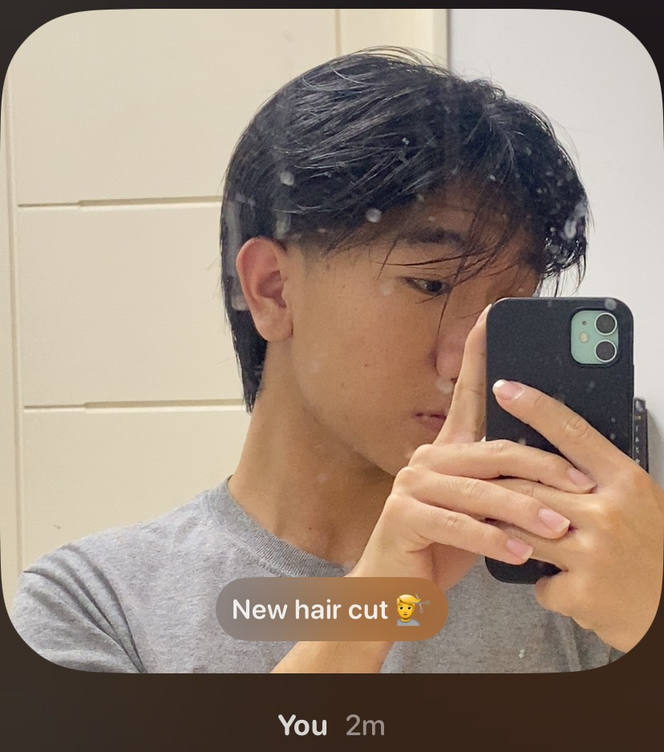
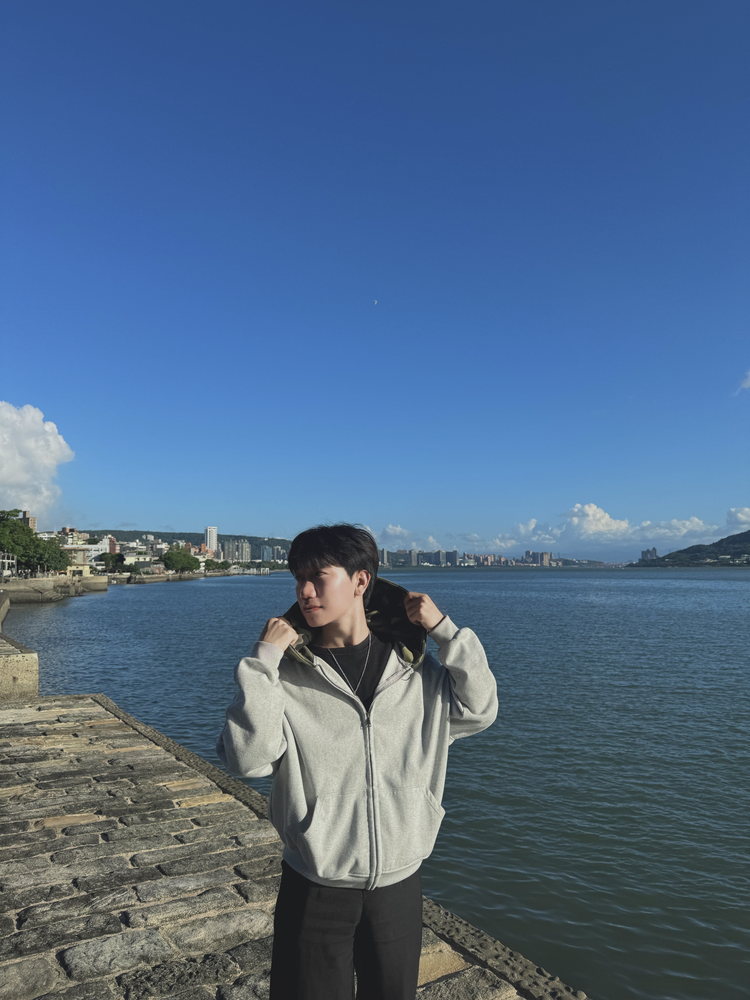
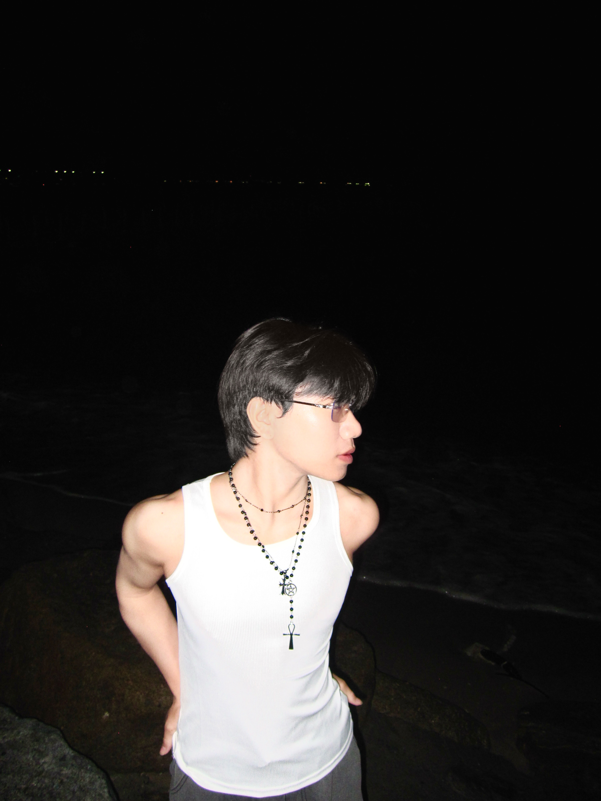

晨序春
Kaiwit Wooyue · Traveler of Music & Light

幻想畫廊 · Gallery
 
基本資料 · Profile
國籍：泰國
年齡：20
興趣 · Passions
🎤 Singing
✨ K-Pop
🎮 Gaming
工作經驗 · Experience
日式餐廳｜顧客服務人員
顧客服務與點餐溝通
基礎翻譯與需求協助
團隊合作與服務品質維持
特質 · Traits
優點
快速學習
高適應力
責任感強
缺點
不擅長拒絕
對自己要求過高
旅程 · Journey
學習語言、探索世界、迎接未知的未來
「用音樂連結世界，用笑容迎接未來。」
社群 · Links
Instagram
Twitter (X)
TikTok